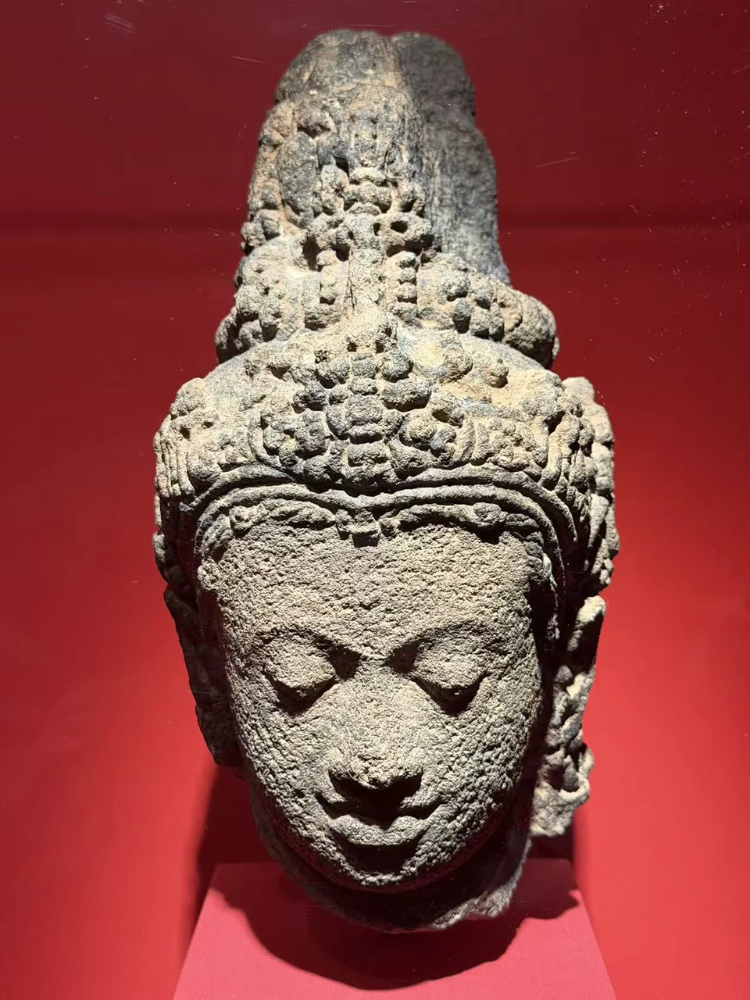
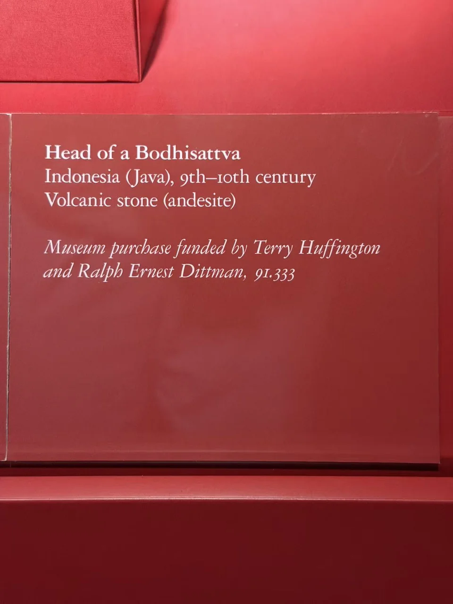

MFAH COLLECTION / NEIGHBORING WORK
菩萨头像
Head of a Bodhisattva
安山岩的粗颗粒与冠饰的细密层次。

- 地区
- 爪哇，印度尼西亚
- 年代
- 9—10世纪
- 材料
- 安山岩
- 收藏
- 休斯顿美术馆
- 观看地点
- 休斯顿美术馆（MFAH）
- 馆藏号
- 91.333
作品札记
高冠与耳饰仍占据头像的大半轮廓，脸部的眉、鼻与嘴则受到磨蚀。放大后，石材颗粒与冠上有意雕出的花纹并排可见，很容易把材质本身的起伏和刻工区分开。
馆方将它定为爪哇9—10世纪作品，材质是火山岩中的安山岩。现场展签记为美术馆购藏，资金由Terry Huffington及Ralph Ernest Dittman提供，编号91.333。它与虚舟作品相邻展出，收藏归属不同。
现场展签与原始记录

- 题名
- Head of a Bodhisattva
- 地区
- Indonesia (Java)
- 年代
- 9th–10th century
- 材料
- Volcanic stone (andesite)